Introduction
This is a portfolio for the course Introduction to Engineering design, EK210.
We learnt the process of engineering design, and designed, as well as made a pulse oximeter using Arduino as a group for practice.
1. Reverse Engineering
Reverse engineering is learning the design of a product by disassembling and analyzing that product, which helps with our learning of engineering design.
For ths task, I reverse engineered my broken headphone to see how it works. I analyzed the Bill of Material and functional decomposition, as well as drew a sketch of the product.
The bill of materials helps with evaluating the cost of the whole product, which would be very helpful when designing a product. Before writing this report, I also learnt with how to do engineering sketch. This helps with making a design clear, and let me know the dimensions of the product that I'm designing. However, for this project, I'm still somewhat confused with the functional decomposition. Hopefully there is chance to elaborate on it more later.
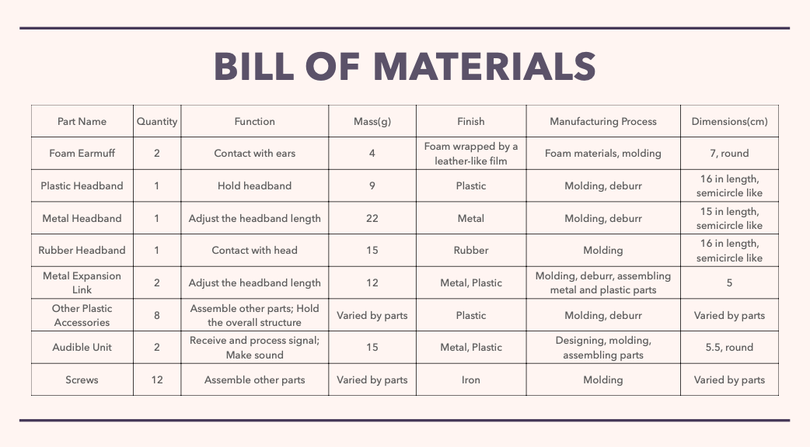 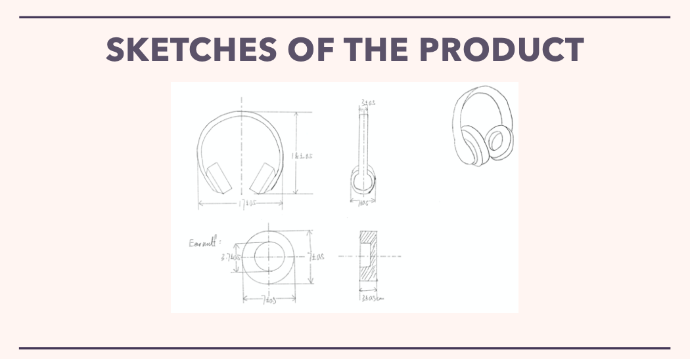2. Temperature Sensing Using Arduino & LCD Screen
Since we're making the final project, which is the pulse oximeter, using Arduino, we're learning Arduino basics. For this task, we coded the Arduino and wired the components to make a temperature sensor, and display the temperature on the LCD screen. We build 2 systems. One uses TMP36 as the sensor, and the other uses 10k Ohm thermistor for temperature sensoring.
The physics of both working systems
TMP36: By connecting the TMP36 sensor to 5V source and ground, it outputs an analog voltage from the pin in the middle. The output voltage changes proportionally to the temperature change, and therefore the temperature can be calculated by using the output voltage and some data from the data sheet. Thermistor: It is a temperature sensitive resistor. As temperature changes, the resistor value changes. By using another resistor (e.g. 10K Ohm) to do voltage division. By measuring the voltage on the thermistor, we can first calculate the resistor value of the thermistor at this temperature, and then use the Steinhart Equation to calculate the temperature in Kelvin. Then we can convert the temperature into Celsius.
Difference in performance
When measuring the temperature of boiling water at room temperature: The thermistor takes approximately 10 seconds to rise from room temperature (approximately 30 Celsius degree) to the plateau, which is around 91.65 Celsius degree (I turned off the gas cooker when measuring, so the actual temperature of the water may be lower than 100 Celsius), and then stop changing. The TMP36 sensor takes 8 seconds for the temperature to rise from 30.16 Celsius degree to 46.38 Celsius degrees; then the temperature rises slowly, and finally reaches a plateau of around 49 Celsius degrees at 18 seconds. When measuring the temperature of ice-water mixture at room temperature: The thermistor takes 16 seconds to reach the plateau, which is at 7.17 Celsius degree. Before reaching the plateau, it takes only 8 seconds to reach 7.89 Celsius degree, and then the temperature decreases slowly. On the other hand, TMP36 takes 14 seconds to reach a plateau at 13.54 degrees. When measuring both boiling water, the thermistor can reach the temperature of the water in 10 seconds; however, the TMP36 sensor cannot reach the target temperature, and the respond time is relatively long. When measuring ice-water mixture, both systems cannot reach the target temperature, which is 0 Celsius degree; however, the thermistor has a more accurate measuring result compared with TMP36. The responding time of both systems are similar.
Criteria to decide which sensor to use
Relatively high accuracy and precision. Measuring range. For example, I found the highest temperature that TMP36 can reach is approximately 50 Celsius degree (may be caused by operation error), while the thermistor can reach 90 Celsius degrees; therefore, if my project needs to measure the temperature of something with a temperature higher than 50 Celsius degrees, I would choose thermistor. Short respond time. This depends on how fast I need the project to be. The cost of the sensor —— the lower the better.
Measuring Process
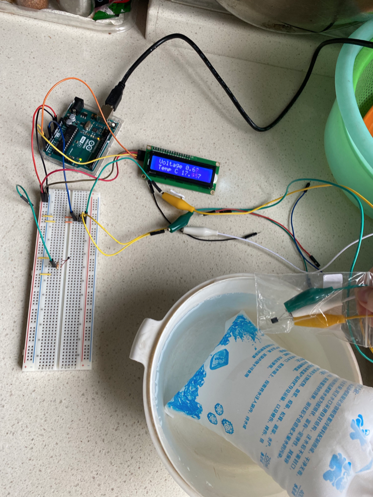Data Display
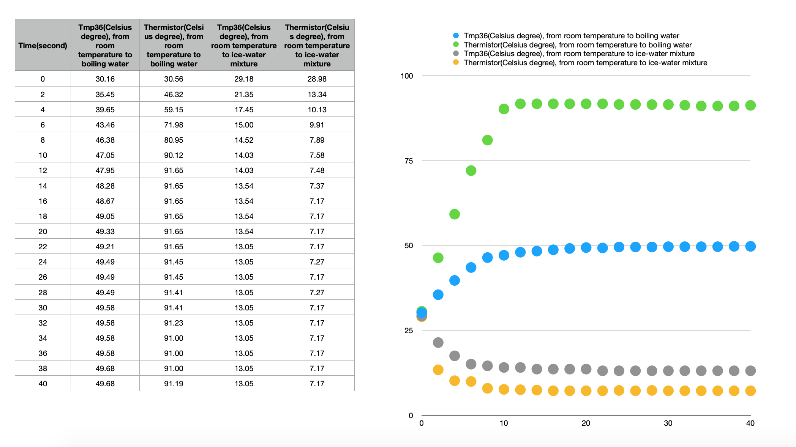3. Introduction& Problem Identification
Problem Statement
For Covid-19 patients, low blood oxygen levels are a warning sign of needing medical care and can become dangerous. Risking exposing others, the high cost of medical care, and the current overcrowding in hospitals makes it difficult for patients to constantly check their levels without being admitted. It would be cheaper and safer if such could be done at home.
Goal
We wish to design a commercial, economical device that will measure the blood oxygen levels and pulse rate of symptomatic patients with Covid-19 to evaluate the need for potential medical interventions.
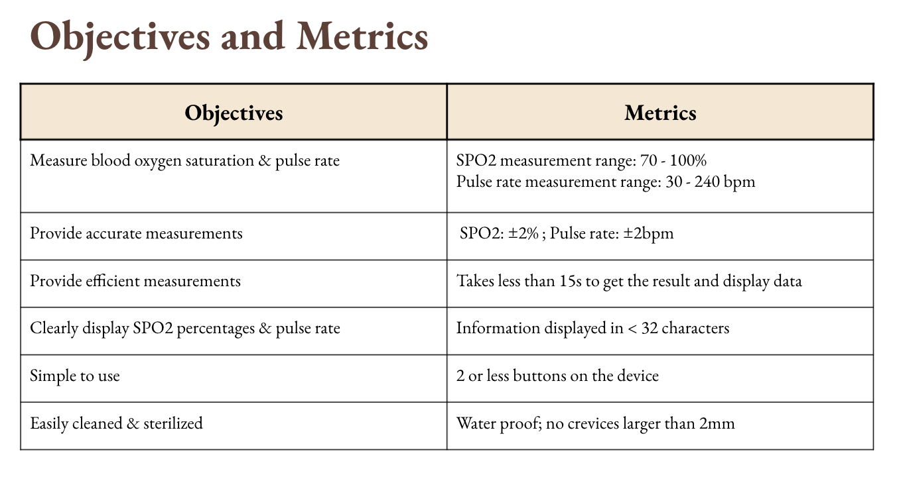 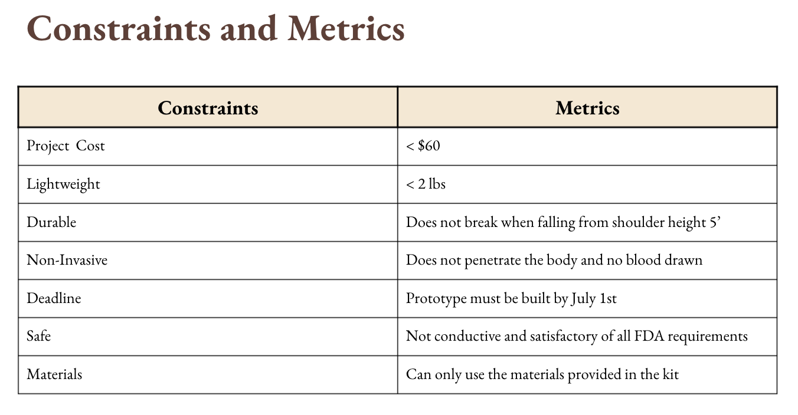4. Conceptual Design
Functional Analysis (Glass Box)
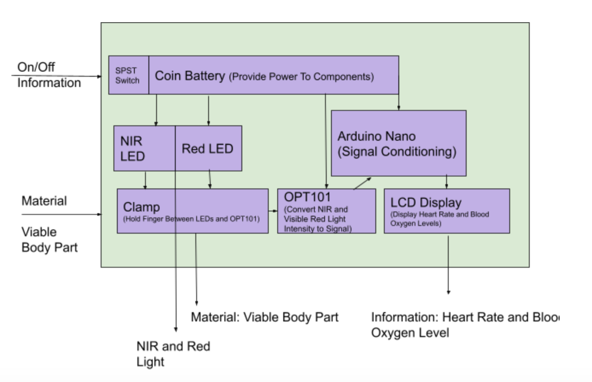The glass box represents the internal functioning of the pulse oximeter based on its inputs. First, two distinct inputs can be established: One in the form of information to indicate the on/off settings of the device, and the other as a form of material based on the viable body part that the device clamps onto. Inside the glass box, each input can be followed. The SPST switch indicates the on/off settings of the device where the on setting allows the coin battery to provide the energy needed to power the NIR and red LEDs, Arduino Nano, OPT101, and the LCD display that are essential to the functioning pulse oximeter. Secondly, the device would clamp onto a viable body part that the LEDs can pass through and the OPT101 can measure levels of light absorbance providing the information needed to measure and display both blood oxygen saturation and pulse rate.
Morphological Chart
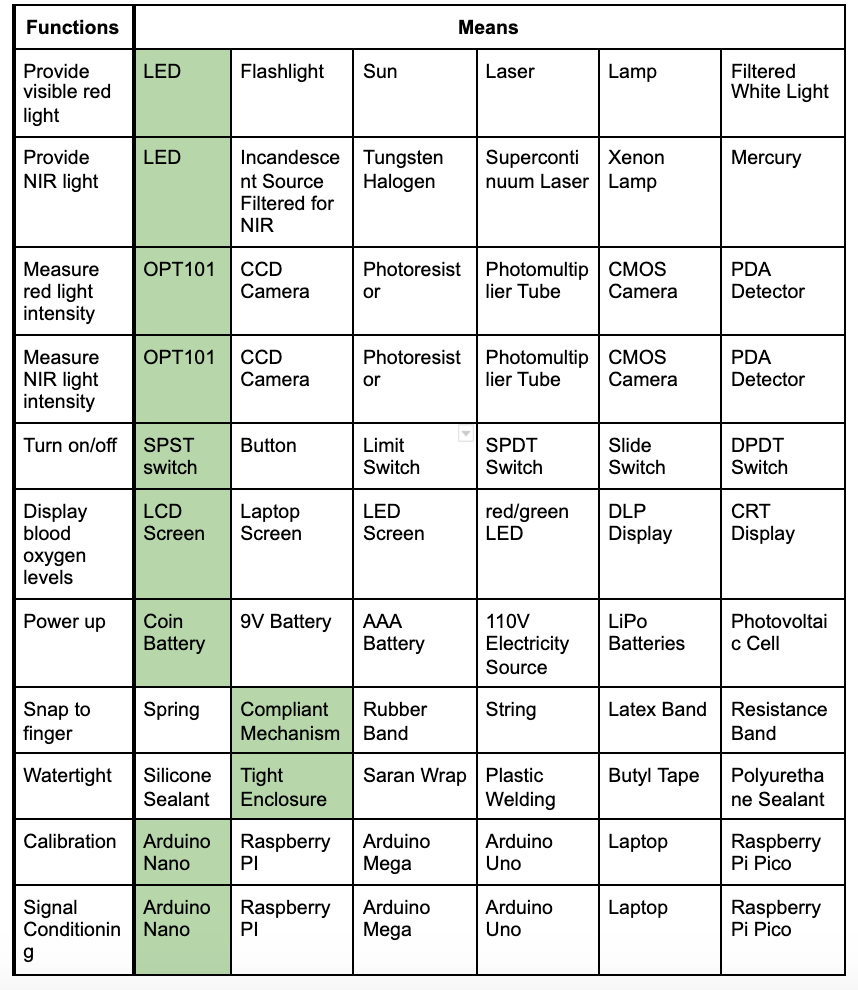This table describes the design space of the pulse oximeter by listing out all the essential functions of the device and the potential means that could be used to carry out each function. The shaded boxes represent the selected means that were chosen based on the constraints identified in the problem identification stage, such as cost, weight, durability, non-invasiveness, and safety. For example, LEDs and the OPT101 are the most optimal means to provide NIR and red light and to measure light absorbance in the device because they are small, cheap, and easy to use with the Arduino Nano. These selected means then make up the conceptual design of the pulse oximeter.
Sketches
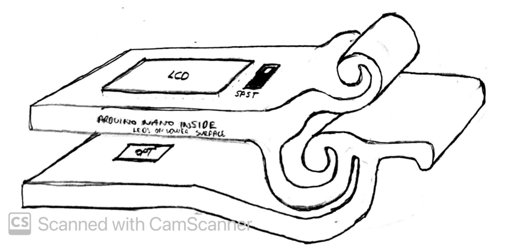 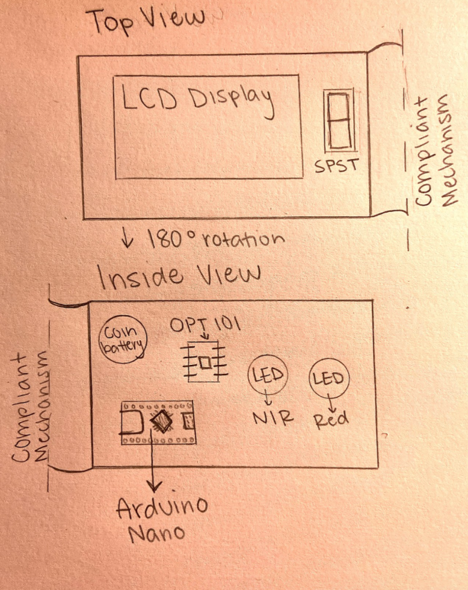5. Preliminary Design & Mathematical Model
Power Requirements
Knowing the total power consumption allows us to select an appropriate power supply. To obtain the total power consumption value, we must add together the power consumption of both the electronic components and the passive resistance components. These values and the total power consumption are shown in the table below.
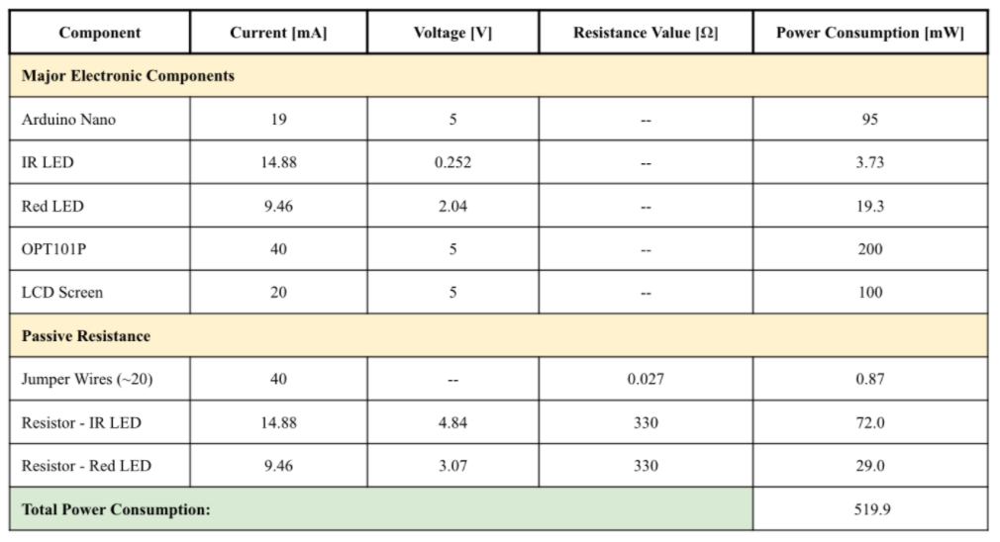The total power consumption value helps us choose the battery to use for power supply. From the table, total power consumption = 519.9 mW. We want the battery life of the pulse oximeter to be a minimum of 2 hours. Based on these specifications, we can choose an appropriate battery.
SaO2 Concentration
6. Physical Model
aaaaa